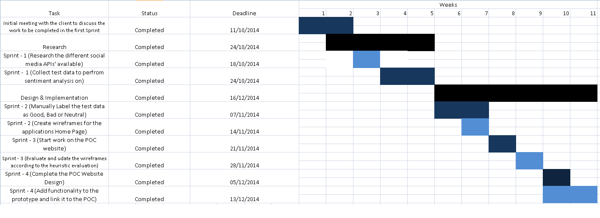

Project Scope
The aim of the entire project as specified by our client is to develop a product that can be configured to automatically route social media activity to the most appropriate person(s) and/or system(s) to enable a fast response. This action has been split into two phases and the scope of the first part of the project is to have a product that can pull in data from social media platforms, analyze that tweet and display only the type of tweets that the user in interested in seeing. Upon completion of this first phase in term-1, the system will be extended during term-2 to automatically route the information to appropiate personell within the system.
For term-1 we are expected to have an interface which will display the relevant tweets in real time from the moment the user logs into the system to 5 hours before the login. The user will be able to filter the displayed tweets via the three labels: Good, Bad, Neutral.
Project Progression
We have captured the progress of our team in the form of Gantt-chart as follows:

Project Requirement
The requirements are presented in the format of a MOSCOW table which have been gathered from the client via the initial description of the project and bi-weekly meetings.
MoSCOW
| Must Have |
- Display the tweets relevant to the company
- Label each tweet into three categories: Good, Bad or Neutral
- Display relevant tweets within the last 5 hours
- Filter tweets by their labels
|
| Should Have |
- Time filter to allow selection of the range of time from which the tweets will be displayed
- Location filter to allow selection of the locations from which tweets will be shown
|
| Could Have |
- Retrieve posts from different social media sites such as Facebook, Instagram, Flickr
- Sentiment of a user over a period of time
|
| Would Like to Have |
- Exact location filter to narrow the analysis on a specific station/platform
- Reply to a specific tweet, this would need the user to be logged into their twitter account
- Heat Map of areas corresponding to their sentiment density i.e. an area with a lot of negative tweets will have a deep red color and an area with positive seniment will have a green color
|
Use Cases
| ID |
Event |
Action |
Additional Constraint |
| 1 |
User logs into the system |
The page automatically displays the current and previous tweets within the last 5 hours in a sorted order with the most recent tweet at the top. Tweets are displayed according to the time they were fetched |
None |
| 2 |
User Selects a Sentiment Label |
The existing tweets are filtered to display only the tweets that have been fetched in the past 5 hours and has the specific sentiment label |
None |
Project Runtime
The Project is specified to run privately on the clients device such as a laptop or tablet. Bootstrap has been used to scale the application to the platform on which it is running but mostly the application is going to be run on a screen that can handle a native website's architecture. For this purpose the Linux OS has not been customized with additonal packages as the private web application is suited to the machine that it will be running on.